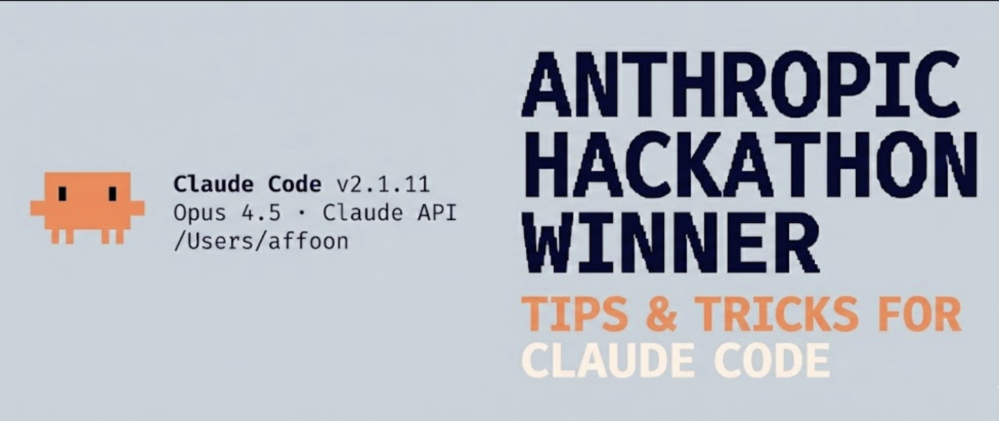
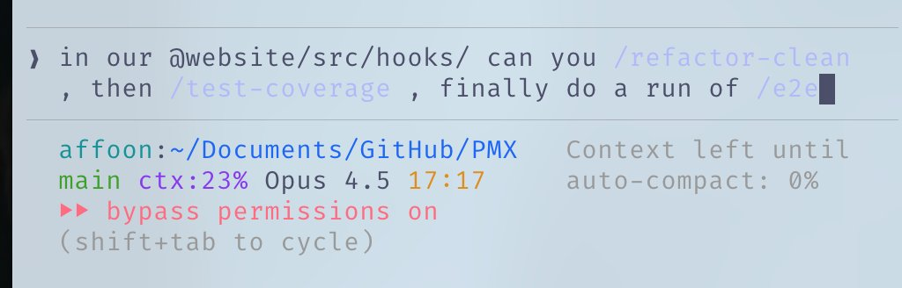
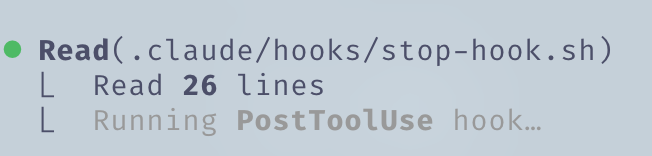
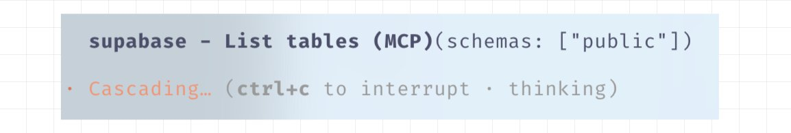
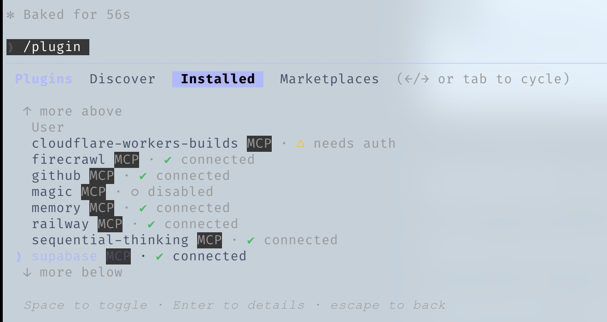
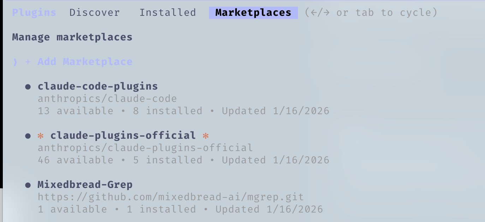
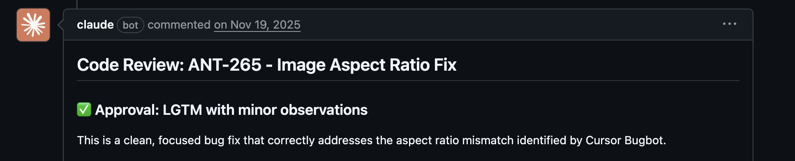
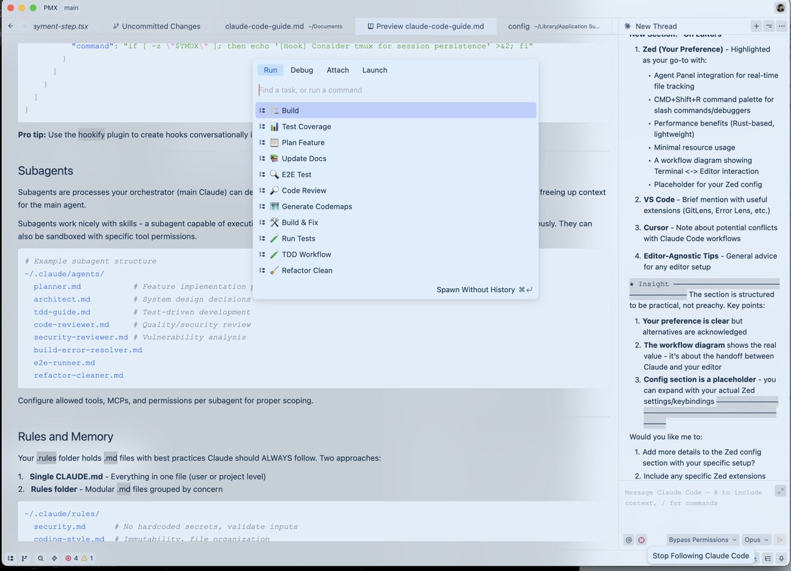
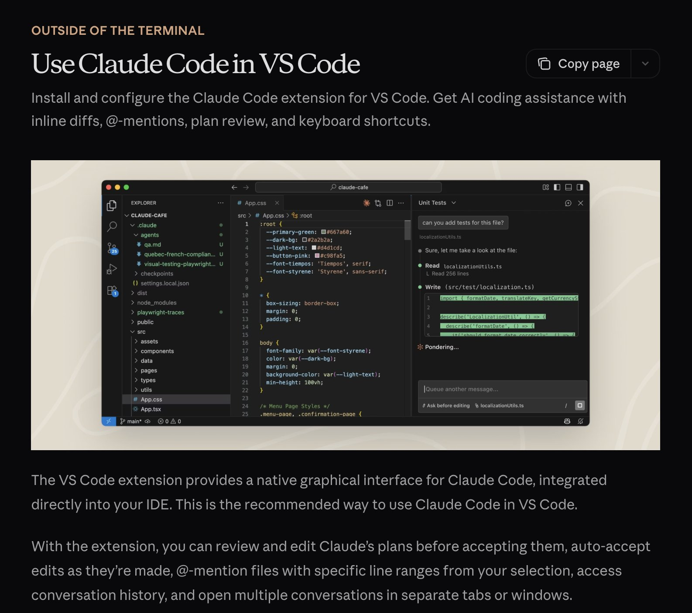
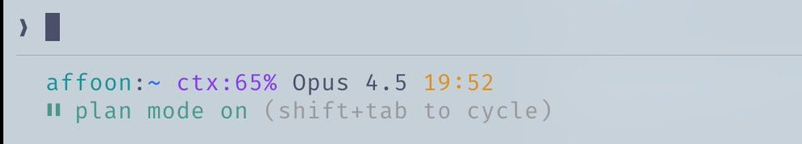

The Shorthand Guide to Everything Claude Code

从 2 月 experimental rollout 起就一直重度使用 Claude Code，并与 @DRodriguezFX 一起用 Claude Code 赢得 Anthropic x Forum Ventures hackathon，做出了 zenith.chat。
这是我日常使用约 10 个月后的完整 setup：skills、hooks、subagents、MCPs、plugins，以及真正好用的部分。
原文：X 帖 · 官方稿：the-shortform-guide.md · 配置仓库：affaan-m/ECC
Skills and Commands
Skills 是主要的 workflow 入口。它们像带作用域的 workflow 包：可复用的 prompts、结构、配套文件，以及需要某种执行模式时的 codemaps。
用 Opus 4.5 写了很久之后，想清掉 dead code 和散落的 .md 文件？跑 /refactor-clean。需要测试？/tdd、/e2e、/test-coverage。这些 slash entries 很方便，但真正持久的单元是底层的 skill。Skills 也可以带 codemaps——让 Claude 快速导航 codebase，而不把 context 浪费在探索上。

把 commands 串起来用
ECC 仍然带有 commands/ 层，但最好把它看成迁移期的 legacy slash-entry 兼容层。持久逻辑应放在 skills 里。
- Skills:
~/.claude/skills/- 规范的 workflow 定义 - Commands:
~/.claude/commands/- 仍需要时的 legacy slash-entry shims
# Example skill structure
~/.claude/skills/
pmx-guidelines.md # Project-specific patterns
coding-standards.md # Language best practices
tdd-workflow/ # Multi-file skill with SKILL.md
security-review/ # Checklist-based skillHooks
Hooks 是按特定事件触发的自动化。与 skills 不同，它们绑定在 tool calls 和 lifecycle events 上。
Hook Types:
- PreToolUse - 工具执行前（validation、reminders）
- PostToolUse - 工具执行后（formatting、feedback loops）
- UserPromptSubmit - 你发送消息时
- Stop - Claude 结束回复时
- PreCompact - context compaction 之前
- Notification - Permission requests
Example: tmux reminder before long-running commands
{
"PreToolUse": [
{
"matcher": "tool == \"Bash\" && tool_input.command matches \"(npm|pnpm|yarn|cargo|pytest)\"",
"hooks": [
{
"type": "command",
"command": "if [ -z \"$TMUX\" ]; then echo '[Hook] Consider tmux for session persistence' >&2; fi"
}
]
}
]
}
运行 PostToolUse hook 时，在 Claude Code 里会看到的反馈示例
Pro tip: 用 hookify plugin 通过对话创建 hooks，不必手写 JSON。运行 /hookify，描述你想要的即可。
Subagents
Subagents 是你的 orchestrator（主 Claude）可以委派任务的进程，作用域受限。可在 background 或 foreground 运行，为主 agent 腾出 context。
Subagents 和 skills 搭配很好——能执行一部分 skills 的 subagent 可被委派任务并自主使用这些 skills。它们也可以用特定的 tool permissions 做 sandbox。
# Example subagent structure
~/.claude/agents/
planner.md # Feature implementation planning
architect.md # System design decisions
tdd-guide.md # Test-driven development
code-reviewer.md # Quality/security review
security-reviewer.md # Vulnerability analysis
build-error-resolver.md
e2e-runner.md
refactor-cleaner.md为每个 subagent 配置允许的 tools、MCPs 和 permissions，以便正确 scoping。
Rules and Memory
.rules 文件夹里放 Claude 始终应遵守 的 best practices。两种做法：
- Single CLAUDE.md - 全部放在一个文件里（user 或 project 级别）
- Rules folder - 按关注点拆成模块化的
.md文件
~/.claude/rules/
security.md # No hardcoded secrets, validate inputs
coding-style.md # Immutability, file organization
testing.md # TDD workflow, 80% coverage
git-workflow.md # Commit format, PR process
agents.md # When to delegate to subagents
performance.md # Model selection, context managementExample rules:
- 代码库不用 emojis
- frontend 少用紫色系
- 部署前始终先测试代码
- 优先模块化代码，避免 mega-files
- 永远不要 commit
console.logs
MCPs (Model Context Protocol)
MCPs 让 Claude 直接连接外部服务。它不是 APIs 的替代品——而是围绕它们的 prompt-driven wrapper，在信息导航上更灵活。
Example: Supabase MCP 让 Claude 拉取特定数据、直接在上游跑 SQL，不必 copy-paste。databases、deployment platforms 等同理。

Supabase MCP 列出 public schema 中 tables 的示例
Chrome in Claude: 是内置的 plugin MCP，让 Claude 自主操控浏览器——点点看看东西怎么工作。
CRITICAL: Context Window Management
对 MCPs 要挑剔。我会把所有 MCPs 放在 user config 里，但关掉所有当前不用的。打开 /plugins 往下滚，或运行 /mcp。

用 /plugins 查看当前已安装的 MCPs 及其状态
启用太多 tools 时，compaction 前的 200k context window 可能只剩约 70k。性能会明显下降。
Rule of thumb: config 里可以有 20–30 个 MCPs，但启用控制在 10 个以内 / 活跃 tools 少于约 80 个。
# Check enabled MCPs
/mcp
# Disable unused ones in ~/.claude/settings.json or in the current repo's .mcp.jsonPlugins
Plugins 把 tools 打包，方便安装，省去繁琐的手动 setup。一个 plugin 可以是 skill + MCP 的组合，或 hooks/tools 打包在一起。
Installing plugins:
# Add a marketplace
# mgrep plugin by @mixedbread-ai
claude plugin marketplace add https://github.com/mixedbread-ai/mgrep
# Open Claude, run /plugins, find new marketplace, install from there
显示新安装的 Mixedbread-Grep marketplace
LSP Plugins 在经常于编辑器外运行 Claude Code 时特别有用。Language Server Protocol 给 Claude 实时 type checking、go-to-definition 和 intelligent completions，不必打开 IDE。
# Enabled plugins example
typescript-lsp@claude-plugins-official # TypeScript intelligence
pyright-lsp@claude-plugins-official # Python type checking
hookify@claude-plugins-official # Create hooks conversationally
mgrep@Mixedbread-Grep # Better search than ripgrep和 MCPs 一样的警告——盯着你的 context window。
Tips and Tricks
Keyboard Shortcuts
Ctrl+U- 删除整行（比狂按 backspace 快）!- 快速 bash command 前缀@- 搜索文件/- 发起 slash commandsShift+Enter- 多行输入Tab- 切换 thinking 显示Esc Esc- 中断 Claude / 恢复代码
Parallel Workflows
- Fork (
/fork) - Fork conversations，并行做互不重叠的任务，别堆排队消息 - Git Worktrees - 并行多个会重叠的 Claudes 且不冲突。每个 worktree 是独立 checkout
git worktree add ../feature-branch feature-branch
# Now run separate Claude instances in each worktreetmux for Long-Running Commands
流式查看 Claude 跑的 logs/bash processes：
Watch: tmux session streaming a long-running command (video)
tmux new -s dev
# Claude runs commands here, you can detach and reattach
tmux attach -t devmgrep > grep
mgrep 明显强于 ripgrep/grep。通过 plugin marketplace 安装，然后用 /mgrep skill。同时支持 local search 和 web search。
mgrep "function handleSubmit" # Local search
mgrep --web "Next.js 15 app router changes" # Web searchOther Useful Commands
/rewind- 回到上一个状态/statusline- 自定义 branch、context %、todos/checkpoints- 文件级 undo points/compact- 手动触发 context compaction
GitHub Actions CI/CD
用 GitHub Actions 给 PRs 配置 code review。配置好后 Claude 可以自动 review PRs。

Claude 批准一个 bug fix PR
Sandboxing
风险操作使用 sandbox mode——Claude 在受限环境中运行，不影响你的实际系统。
On Editors
编辑器选择会显著影响 Claude Code workflow。虽然 Claude Code 在任何 terminal 都能用，但搭配好用的编辑器可以解锁实时 file tracking、快速导航和集成的 command execution。
Zed (My Preference)
我用 Zed——用 Rust 写的，所以真的很快。几乎秒开，扛得住超大 codebases，几乎不占系统资源。
Why Zed + Claude Code is a great combo:
- Speed - 基于 Rust 的性能意味着 Claude 快速改文件时没有 lag，编辑器跟得上
- Agent Panel Integration - Zed 的 Claude integration 让你实时跟踪 Claude 改动的文件。不用离开编辑器就能跳到 Claude 引用的文件
- CMD+Shift+R Command Palette - 在可搜索 UI 里快速访问所有自定义 slash commands、debuggers、build scripts
- Minimal Resource Usage - 重度操作时不会和 Claude 抢 RAM/CPU。跑 Opus 时很重要
- Vim Mode - 完整 vim keybindings（如果你需要）

Zed Editor 用 CMD+Shift+R 打开的 custom commands 下拉。右下角靶心是 Following mode。
Editor-Agnostic Tips:
- Split your screen - 一边 terminal 跑 Claude Code，一边编辑器
- Ctrl + G - 在 Zed 里快速打开 Claude 正在处理的文件
- Auto-save - 开启 autosave，确保 Claude 读到的始终是最新文件
- Git integration - 用编辑器的 git 功能在 commit 前审阅 Claude 的改动
- File watchers - 多数编辑器会自动重载变更文件，确认已开启
VSCode / Cursor
这也是可行选择，和 Claude Code 配合很好。可以用 terminal 形式，通过 \ide 与编辑器自动同步并启用 LSP（现在和 plugins 有一定重叠）。也可以选 extension，与 Editor 集成更深，并有匹配的 UI。

VS Code extension 为 Claude Code 提供原生图形界面，直接集成到 IDE。
My Setup
Plugins
Installed:（我通常同时只启用 4–5 个）
ralph-wiggum@claude-code-plugins # Loop automation
frontend-patterns@claude-code-plugins # UI/UX patterns
commit-commands@claude-code-plugins # Git workflow
security-guidance@claude-code-plugins # Security checks
pr-review-toolkit@claude-code-plugins # PR automation
typescript-lsp@claude-plugins-official # TS intelligence
hookify@claude-plugins-official # Hook creation
code-simplifier@claude-plugins-official
feature-dev@claude-code-plugins
explanatory-output-style@claude-code-plugins
code-review@claude-code-plugins
context7@claude-plugins-official # Live documentation
pyright-lsp@claude-plugins-official # Python types
mgrep@Mixedbread-Grep # Better searchMCP Servers
Configured (User Level):
{
"github": { "command": "npx", "args": ["-y", "@modelcontextprotocol/server-github"] },
"firecrawl": { "command": "npx", "args": ["-y", "firecrawl-mcp"] },
"supabase": {
"command": "npx",
"args": ["-y", "@supabase/mcp-server-supabase@latest", "--project-ref=YOUR_REF"]
},
"memory": { "command": "npx", "args": ["-y", "@modelcontextprotocol/server-memory"] },
"sequential-thinking": {
"command": "npx",
"args": ["-y", "@modelcontextprotocol/server-sequential-thinking"]
},
"vercel": { "type": "http", "url": "https://mcp.vercel.com" },
"railway": { "command": "npx", "args": ["-y", "@railway/mcp-server"] },
"cloudflare-docs": { "type": "http", "url": "https://docs.mcp.cloudflare.com/mcp" },
"cloudflare-workers-bindings": {
"type": "http",
"url": "https://bindings.mcp.cloudflare.com/mcp"
},
"clickhouse": { "type": "http", "url": "https://mcp.clickhouse.cloud/mcp" },
"AbletonMCP": { "command": "uvx", "args": ["ableton-mcp"] },
"magic": { "command": "npx", "args": ["-y", "@magicuidesign/mcp@latest"] }
}关键在这里——我配置了 14 个 MCPs，但每个项目只启用约 5–6 个。这样能保持 context window 健康。
Key Hooks
{
"PreToolUse": [
{ "matcher": "npm|pnpm|yarn|cargo|pytest", "hooks": ["tmux reminder"] },
{ "matcher": "Write && .md file", "hooks": ["block unless README/CLAUDE"] },
{ "matcher": "git push", "hooks": ["open editor for review"] }
],
"PostToolUse": [
{ "matcher": "Edit && .ts/.tsx/.js/.jsx", "hooks": ["prettier --write"] },
{ "matcher": "Edit && .ts/.tsx", "hooks": ["tsc --noEmit"] },
{ "matcher": "Edit", "hooks": ["grep console.log warning"] }
],
"Stop": [
{ "matcher": "*", "hooks": ["check modified files for console.log"] }
]
}Custom Status Line
显示 user、directory、带 dirty indicator 的 git branch、剩余 context %、model、time 和 todo count：

在 Mac 根目录下的 statusline 示例
affoon:~ ctx:65% Opus 4.5 19:52
▌▌ plan mode on (shift+tab to cycle)Rules Structure
~/.claude/rules/
security.md # Mandatory security checks
coding-style.md # Immutability, file size limits
testing.md # TDD, 80% coverage
git-workflow.md # Conventional commits
agents.md # Subagent delegation rules
patterns.md # API response formats
performance.md # Model selection (Haiku vs Sonnet vs Opus)
hooks.md # Hook documentationSubagents
~/.claude/agents/
planner.md # Break down features
architect.md # System design
tdd-guide.md # Write tests first
code-reviewer.md # Quality review
security-reviewer.md # Vulnerability scan
build-error-resolver.md
e2e-runner.md # Playwright tests
refactor-cleaner.md # Dead code removal
doc-updater.md # Keep docs syncedKey Takeaways
- Don't overcomplicate - 把 configuration 当成 fine-tuning，而不是 architecture
- Context window is precious - 关掉不用的 MCPs 和 plugins
- Parallel execution - fork conversations，使用 git worktrees
- Automate the repetitive - 用 hooks 做 formatting、linting、reminders
- Scope your subagents - tools 越少 = 执行越聚焦
References
- Plugins Reference
- Hooks Documentation
- Checkpointing
- Interactive Mode
- Memory System
- Subagents
- MCP Overview
Note: 这里只是细节的子集。进阶模式见 Longform Guide。
在 NYC 用 Claude Code 与 @DRodriguezFX 一起做出 zenith.chat，赢得 Anthropic x Forum Ventures hackathon